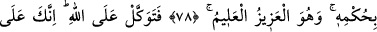

SEN APAÇIK
HAKİKAT ÜZERESİN
76. Doğrusu bu Kur’an, İsrailoğullarına, hakkında ihtilâf edegeldikleri şeylerin
pek çoğunu anlatmaktadır.
77. Ve o, müminler için gerçekten bir hidâyet rehberi ve rahmettir.
78. Rabbin şüphesiz, onlar arasında hükmünü verecektir. O, mutlak galiptir, her
şeyi bilendir.
79. O halde sen Allâh’a güvenip dayan. Çünkü sen apaçık hakikat üzeresin.
80. Bil ki sen ölülere işittiremezsin, arkalarını dönüp giderlerken sağırlara da
dâveti duyuramazsın.
81. Sen körleri sapıklıklarından çevirip doğru yola getiremezsin. Ancak
âyetlerimize inanıp da teslim olanlara duyurabilirsin.
“Doğrusu” Muhammed (s.a.)’e indirilen “bu Kur’an, İsrailoğullarına, hakkında”
bilgisizliklerinden dolayı “ihtilâf edegeldikleri şeylerin pek çoğunu anlatmaktadır.”
açıklamaktadır. Nitekim onlar Îsâ (a.s.) ve Uzeyr (a.s.)’ın durumu, âhiretteki cismânî ve
rûhânî haller, cennet ve cehennemin özellikleri, Allah’ı teşbîh ve tenzîh etme gibi
konularda ihtilâf etmişler, birçok konuda birbirlerini reddetmişler ve sonunda bazısı
bazısına la’net etmiştir. Eğer insaf ve adâlet sâhibi olsalar, Kur’an’ı kabul etseler ve
müslüman olsalardı, kurtuluşa ererlerdi.
77. Ve o, mü’minler için gerçekten bir hidâyet rehberi ve rahmettir.
“Ve o,” yâni Kur’ân, gerek İsrâiloğulları’ndan gerekse başkalarından mutlak olarak
“mü’minler için gerçekten bir hidâyet rehberi” yol gösterici “ve rahmettir.”
Mü’minlerin özel olarak zikredilmesi, Kur’an’dan faydalananların onlar olmasından